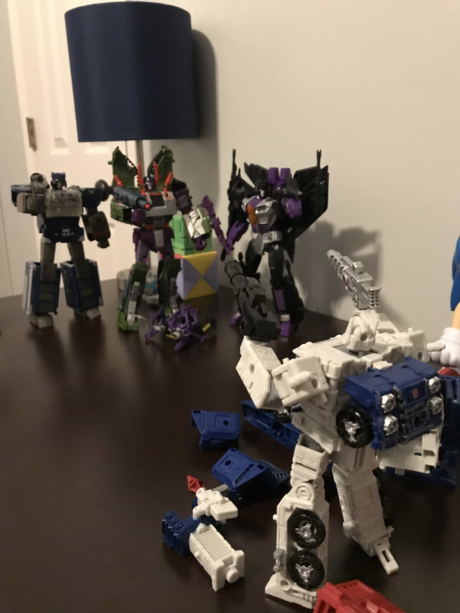
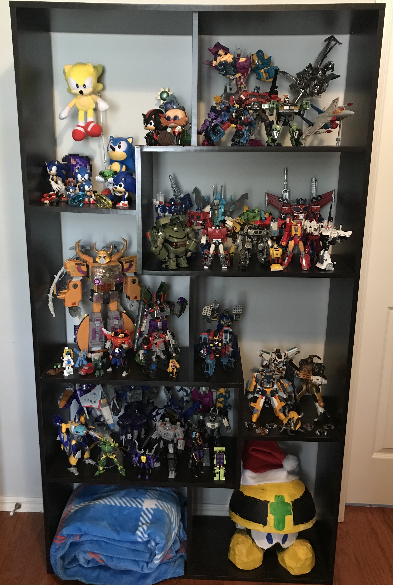
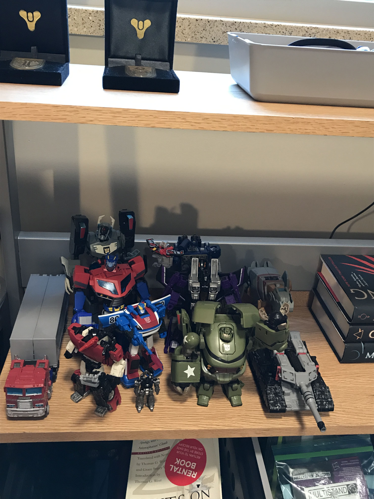
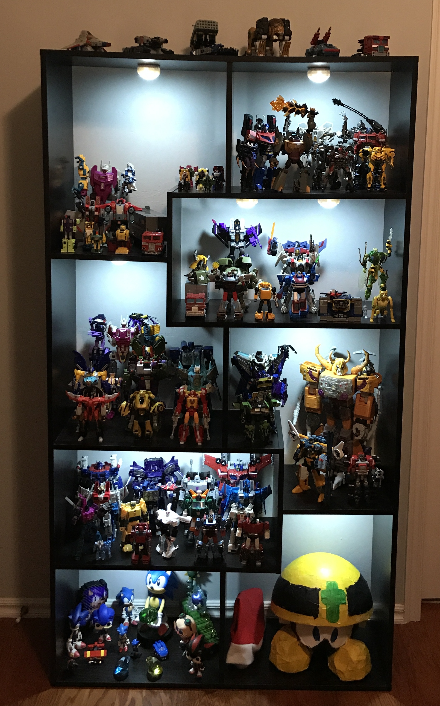
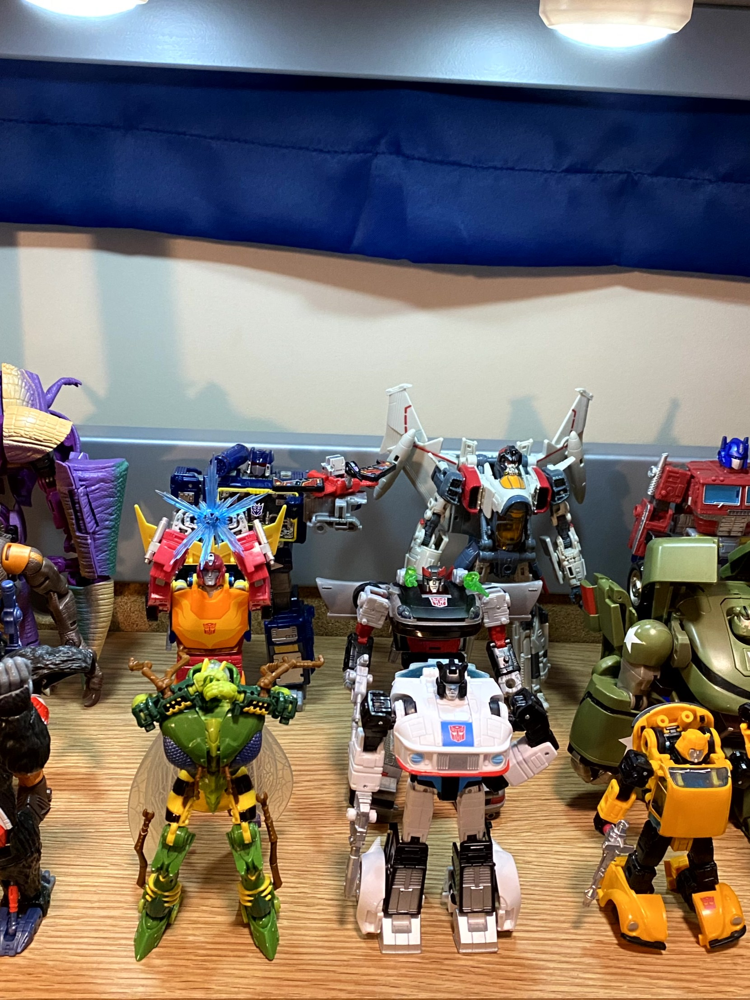
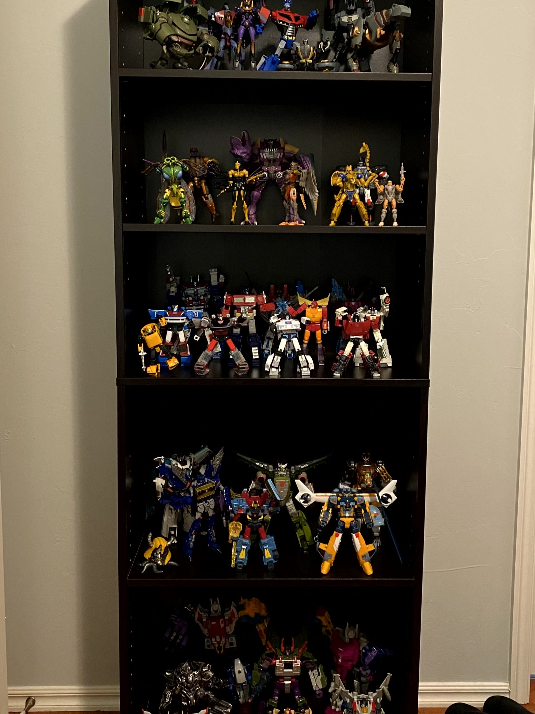
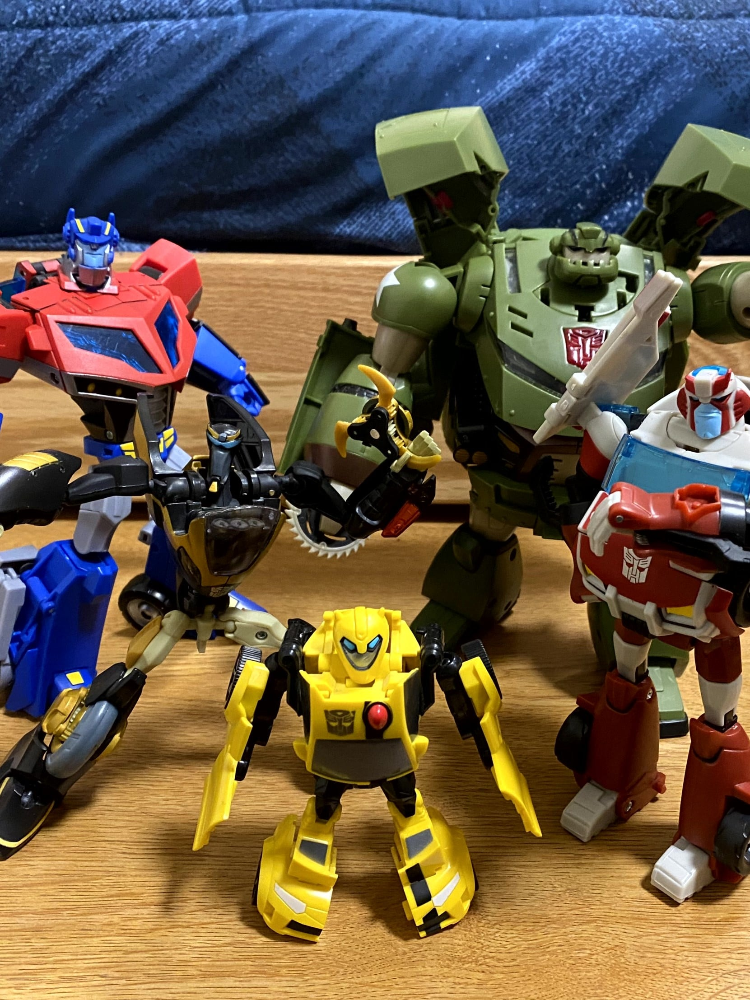
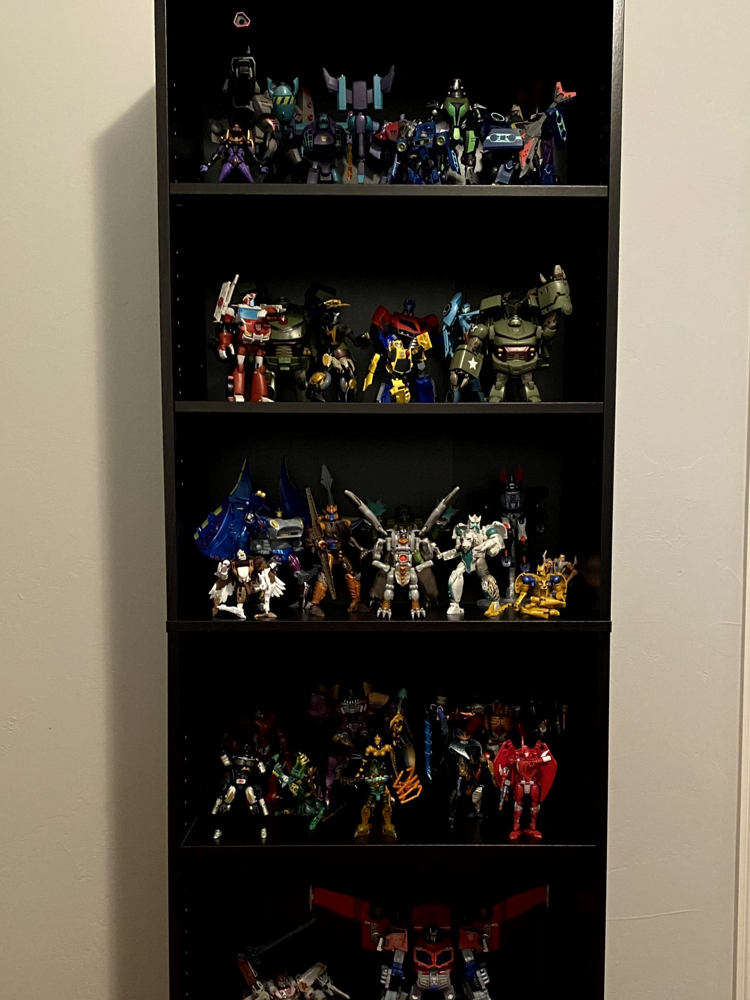
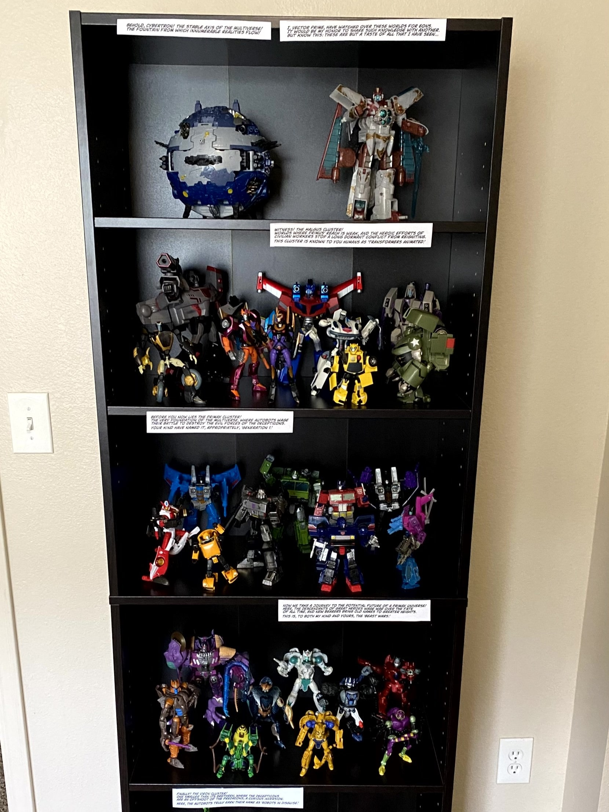

My collecting journey really began when I was young,
about 5 years old. My father had been a big Transformers fan during the franchise's birth
in the 1980s, and so he let me play with some of his surviving old toys. Many of the other toys that
I played with around this time were also Transformers, coming from either the movie toyline, Transformers: Cybertron, or
Transformers Animated. I grew up watching the first
season of Animated and DVDs with several episodes from Transformers: Cybertron and Transformers: Energon.
Over time I would forget about those things until Bumblebee released in 2018, but
my roots in the franchise begin here, and a handful of those original toys I played with
as a child are still on display.
2019

My collection physically began in 2019,
spurred on by the release of the movie Bumblebee at the end of the previous year.
Early on, it was a mishmash of various lines and characters, as I had no real idea
of what I wanted to collect. The first chapter of the War for Cybertron Trilogy, Siege,
was the toyline for the year, so my collection ended up weighing heavily in that direction.
Starting out, I displayed all of my figures in one shelf of my bookshelf. This lasted until
the summer of that year, when I purchased a second bookshelf to be used as my Transformers
display shelf. Sadly, I no longer have any shelf photos from 2019, but this early collection
is still visible in some photos I took back then.
Spring 2020

The Earthrise chapter of the War for
Cybertron Trilogy was released in 2020, and a common complaint among collectors was how
terrible distribution was, due in no small part to the pandemic. Entire waves were either slow
to arrive or missing completely, and the significant amount of exclusives in Earthrise meant many
figures couldn't be obtained at all without paying scalpers. Those problems didn't stop me from
purchasing quite a few Earthrise figures...many of whom I didn't care much about. Additionally, during this
year I picked up a lot of older figures, specifically from Transformers: Cybertron. All of this ended up
bloating my shelf quite a bit, a problem I would not fix for a year or so.
Fall 2020

Leaving home for my first semester
of college meant I couldn't bring my whole collection along, but that wasn't a problem.
During this time, I got a few figures from
Transformers Animated, and some late release Earthrise figures. I shopped online for figures more and more, and got my first taste of misplacing trust in a online retailer. Not many other collection related things happened, but I did start to see the bloat issue I had.
Transformers Animated, and some late release Earthrise figures. I shopped online for figures more and more, and got my first taste of misplacing trust in a online retailer. Not many other collection related things happened, but I did start to see the bloat issue I had.
Winter 2020

Lights! At least for a little while.
I ended up removing them after they would continuously fall down and knock figures over.
In the meantime, another, more important development happened: I began to sort my shelves differently.
Previously, I had sorted by faction, or size, without much consistency. From this point on, I would sort
only by series, with the only exceptions being for toys on my designated "favorites" shelf. This was a
very important change, that opened the door for me to narrow my collecting focus. Near the end of the year,
the Kingdom chapter of the War for Cybertron Trilogy was announced.
Spring 2021

At first, I wasn't very interested in Kingdom
with its Beast Wars theme. However, I was interested enough that I decided to give Beast Wars a watch
for the first time in the buildup...
...and I immediately got onboard the hype train. I had planned on getting one or two of the Beast Wars figures from Kingdom just because, but after my Christmas Break binge of the show, it became my most anticipated line. It was the first time I collected toys of characters I really cared about, which was a cool new experience.
Kingdom released at a much better pace than Earthrise, which was a huge relief.
...and I immediately got onboard the hype train. I had planned on getting one or two of the Beast Wars figures from Kingdom just because, but after my Christmas Break binge of the show, it became my most anticipated line. It was the first time I collected toys of characters I really cared about, which was a cool new experience.
Kingdom released at a much better pace than Earthrise, which was a huge relief.
Summer 2021

Inspired by a tweet I read
from another Transformers collector about making displays instead filling in
crowds of people, I decided in the summer of 2021 to begin downsizing my collection
to have a tighter focus. The first step was getting a smaller, more regular shaped bookshelf.
Here, I abandoned the favorites shelf in favor of pure sorting, hoping to give the display a
more consistent look, with each shelf being entirely self-contained. I sold a significant portion
of my collection during this time, finally dealing with the bloating issue that had been around
since I started collecting. I used the money to buy Kingdom figures to complete my Beast Wars cast.
Spring 2022

After coming back from Winter Break,
I switched up my college shelf to be focused on Transformers Animated, having finally fleshed
out my Animated collection after leaving it by the wayside since the beginning.
Having too many Animated toys to fit one one shelf, I split them up by faction,
and put Grimlock and Blurr in storage to restrict the Autobot display to the main cast.
During this time, I found a spot on campus that I love for photo shoots,
which you can see on the Transformers Animated and War for Cybertron gallery pages.
As a result, I've been more consistent at taking pictures from this point moving forward.
Summer 2022

After returning from college,
my collection was approaching what I considered at the time to be 'complete' status.
Seven shelves, divided into specific categories including two shelves for
Transformers Animated and Beast Wars each, one for the War for Cybertron Trilogy,
one for Transformers: Cybertron, and one for Robots in Disguise. I also had smaller displays
set up in my room, displaying Cybertron Primus on my desk, and several Generation 1 toys on my side table.
Collecting slowed down for a bit. I spent some time trimming off the last bits of fat until I felt ready to start a completely new shelf.
This new display focused on the Robots in Disguise toyline from 2001.
Fall 2022

As summer came to an end,
I decided I needed to sell some toys; the end result of that was the reduction of my shelves from
seven to five, expunging the Transformers Animated and Beast Wars toys that caused me to
double up on shelves. A few months after going back to college and settling in my new apartment, I did it again,
selling my entire Cybertron shelf, and reducing the number of toys on most shelves to nine.
In the meantime, I acquired the last few Robots in Disguise toys I wanted and finished up my Animated collection.
I also had the brilliant idea of framing my shelf as a tour of the Transformers multiverse given
by Vector Prime, which was fun to brainstorm and create captions for.